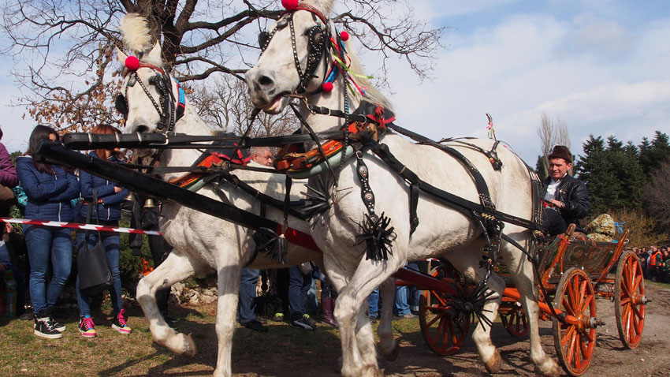

Севлиево-Традиции и обичаи
Празник на тиквата
| „Фестивалът на тиквата“ се провежда от 15 до 18 октомври. Първият „тиквен фестивал“ се провежда през 2006 г. и става традиционен за града. Севлиево е известен с производството си на тикви и шеговито е наричан от местното население Тиквенбург. Ежегодно в Севлиево се провежда празник на тиквата – кулинарен фестивал на местни традиционни гозби, деликатеси и занаяти, сътворени в столицата на тиквата – Севлиево. | |
| В празника участват и децата, които изнасят поетичен рецитал със стихотворения и песни, посветени на тиквата, участват в конкурсни изложби със свои експонати. Подрежда се изложба на детски рисунки и се провежда весел карнавал. По традиция в няколко поредни дни Община Севлиево организира празник на тиквата и есенен панаир, които приключват с тържествено отбелязване на Деня на Севлиево – Петковден. | |
| От 9 до 14 октомври Севлиево ще събере хиляди почитатели на оранжевото изкушение, които ще се докоснат до неповторимата магия на този истински празник за душата. Още сутринта на площад „Свобода“ ще заработи Международният пресцентър, където гостите на фестивала ще могат да получат рекламни материали и да се запознаят в детайли с програмата, а представителите на медиите ще получат своите акредитации. |
.jpg "Огромна тиква на центъра")
|
Тодоровден
| Тодоровден е църковен празник, празнуван в съботния ден от първата седмица на Великия пост. На този ден, както и на 17 февруари, Църквата възпоменава паметта на Св. Теодор Тирон. Почитта към св. Теодор е засвидетелствана още в ранните векове. По данни на НСИ към 2017 г., Тодоровден се празнува от 130 233 души в България. Тодоровден се празнува главно за здравето на конете и затова е празник на коневъдството и на конния спорт. Имен ден празнуват днес Тодор, Тодорка, Теодор, Теодора. В Севлиево при изгрев слънце мъжете сплитат опашките и гривите на конете, украсяват ги с мъниста, с пискюли и цветя, и ги отвеждат на водопой. Жените замесват обредни хлябове, като дават от тях и на конете. | ||
|  | ||